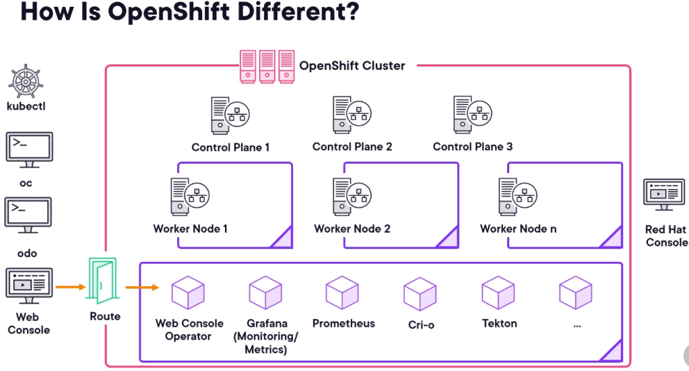

Openshift versus kubernetes

Enterprise ready
Blog Post: OpenShift vs. Kubernetes
Introduction
In the realm of container orchestration, Kubernetes stands as the de facto standard. However, Red Hat's OpenShift, built on top of Kubernetes, offers additional features and capabilities designed to enhance the developer and operational experience. This post will delve into the key differences between OpenShift and Kubernetes, helping you understand which platform might be best suited for your needs.
What is Kubernetes?
Kubernetes, often abbreviated as K8s, is an open-source platform designed to automate deploying, scaling, and operating containerized applications. Initially developed by Google, Kubernetes is now maintained by the Cloud Native Computing Foundation (CNCF). It provides a robust framework to run distributed systems resiliently, scaling and managing applications across clusters of hosts.
Key Features of Kubernetes:
-
Automated Scheduling: Kubernetes can automatically place containers based on resource requirements and constraints, optimizing the use of resources.
-
Self-Healing: It restarts failed containers, replaces and reschedules them when nodes die, and kills containers that don't respond to user-defined health checks.
-
Horizontal Scaling: It can scale applications up and down with a simple command or automatically based on CPU usage.
-
Service Discovery and Load Balancing: Kubernetes can expose containers using DNS names or their own IP addresses and load balance across them.
What is OpenShift?
OpenShift is a container application platform by Red Hat that brings Docker and Kubernetes together to provide an even more comprehensive enterprise solution. While Kubernetes provides the core orchestration capabilities, OpenShift adds developer and operational tools, an application lifecycle management system, and a robust security framework.
Key Features of OpenShift:
-
Developer-Friendly Tools: OpenShift includes a source-to-image (S2I) capability that streamlines the process of building reproducible Docker images from source code.
-
Integrated CI/CD: OpenShift integrates seamlessly with Jenkins for continuous integration and continuous delivery (CI/CD) pipelines.
-
Enhanced Security: OpenShift incorporates stricter security policies by default, including multi-tenancy support, enhanced RBAC, and network isolation.
-
Hybrid Cloud Support: OpenShift is designed to work on a variety of infrastructures, including public clouds, private clouds, and on-premises deployments.
Key Differences
-
User Experience:
-
Kubernetes: Requires more manual setup and configuration. Users need to configure their own CI/CD pipelines, logging, and monitoring.
-
OpenShift: Provides a more out-of-the-box experience with pre-configured tools for logging, monitoring, and CI/CD. It is more user-friendly for developers with its web console and integrated developer tools.
-
Security:
-
Kubernetes: Offers a flexible security model but requires more manual configuration to achieve enterprise-grade security.
-
OpenShift: Comes with built-in security policies and configurations, making it more secure by default. It also includes advanced security features like Security-Enhanced Linux (SELinux) integration.
-
Customizability:
-
Kubernetes: Highly customizable and can be tailored to specific needs. It offers a wide range of plugins and integrations.
-
OpenShift: While customizable, it is less flexible than Kubernetes due to its additional abstractions and pre-configured settings. This trade-off provides ease of use but can limit advanced customizations.
-
Enterprise Support:
-
Kubernetes: Community-driven with enterprise support available through various vendors (e.g., Google Kubernetes Engine, Amazon EKS).
-
OpenShift: Provides enterprise-level support directly from Red Hat, ensuring a single point of contact for all support needs.
Use Cases
When to Choose Kubernetes:
-
You need a highly customizable platform.
-
You have a skilled team familiar with Kubernetes and container orchestration.
-
Your organization requires specific configurations and integrations not provided out-of-the-box by OpenShift.
When to Choose OpenShift:
-
You prefer an out-of-the-box solution with integrated tools and security features.
-
You require enterprise-level support and SLAs.
-
Your team benefits from a more developer-friendly environment with less manual configuration.
Conclusion
Both Kubernetes and OpenShift offer robust solutions for container orchestration, but they cater to different needs and preferences. Kubernetes provides unparalleled flexibility and a vibrant open-source community, making it ideal for teams looking for a customizable and powerful orchestration tool. OpenShift, with its enterprise features and developer-friendly tools, offers a more streamlined experience and is well-suited for organizations looking for a comprehensive, secure, and supported platform.
Ultimately, the choice between OpenShift and Kubernetes will depend on your specific requirements, technical expertise, and operational preferences. Understanding the strengths and limitations of each can help you make an informed decision that aligns with your organization's goals.
Imported from rifaterdemsahin.com · 2024